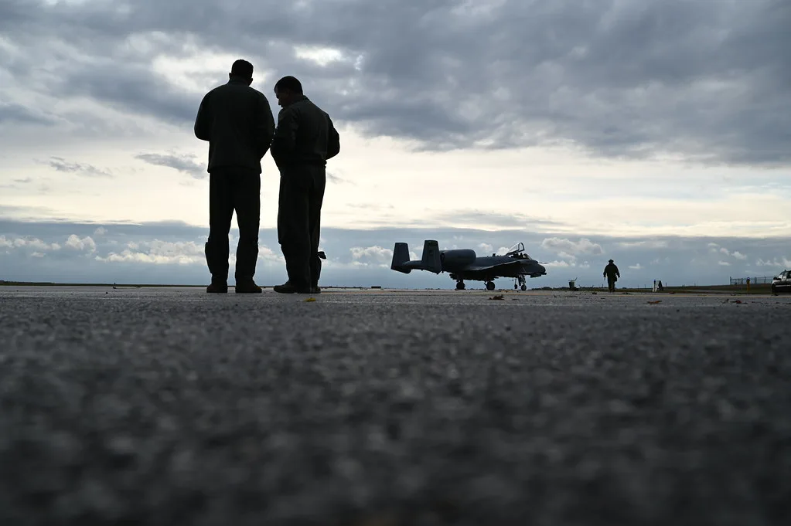

트럼프 "한미 연합훈련 축소 지시"…김정은과의 관계 이유로 들어
도널드 트럼프 미국 대통령이 16일(현지시간) 피트 헤그세스 국방장관에게 한미 연합훈련의 규모를 대폭 축소하라고 지시했다고 밝혔다. 트럼프 대통령은 소셜미디어 트루스소셜에 올린 글에서 "북한 김정은 위원장과 내가 매우 좋은 관계를 맺고 있는 점을 고려할 때, 미국이 한국과 대규모 연합 군사훈련에 참여해온 것이 마음에 들지 않는다"고 적었다. 그는 이어 훈련에 드는 비용의 상당 부분을 미국이 부담하고 있다는 점도 문제로 지적했다.
트럼프 대통령의 이번 발언은 17일부터 27일까지 진행되는 한미 연합연습 '을지 자유의 방패'(UFS)를 앞두고 나왔다는 점에서 파장이 예상된다. 그는 "훈련을 아예 취소하기에는 시점이 너무 늦었다"며 대신 헤그세스 장관에게 훈련 규모를 크게 줄이라고 지시했다고 설명했다. 다만 구체적으로 어떤 훈련 항목이 축소되는지, 실제 병력과 장비 규모가 어느 정도로 줄어드는지에 대해서는 세부 내용을 밝히지 않았다.

올해 UFS 연습은 전시작전통제권(전작권) 전환 준비를 지속적으로 추진하는 계기로도 주목받아 왔다. 한미 양국은 이번 연습에서 지휘소훈련(CPX)과 연계한 실기동훈련 '워리어 실드'(WS)를 함께 진행하며, 대대급 이상 합동 실기동훈련을 다수 계획해온 것으로 전해졌다. 이재명 정부 들어 실기동훈련을 특정 연습 기간에 집중시키기보다 연중 분산해 실시하는 기조로 바뀐 가운데, 이번 훈련 축소 지시가 이런 흐름에 어떤 영향을 줄지도 관심사다.
군 안팎에서는 트럼프 대통령이 연합훈련 축소를 직접 공개적으로 밝힌 것을 두고 이례적이라는 평가가 나온다. 과거에도 트럼프 대통령은 재임 기간 방위비 분담금 문제와 훈련 비용을 여러 차례 거론하며 동맹국의 부담 확대를 요구해온 바 있다. 이번 발언 역시 같은 맥락에서 비용 문제를 전면에 내세운 것으로 풀이되지만, 북한과의 관계를 이유로 든 점은 과거 발언들과 결이 다르다는 지적도 있다. 특히 북한이 최근에도 탄도미사일 발사를 이어가고 있는 상황에서 나온 발언이라, 대북 억지력 유지와 동맹 신호 관리 사이에서 미묘한 파장을 낳고 있다는 분석도 함께 제기된다.

정부와 군 당국은 아직 공식적인 입장을 내놓지 않은 상태다. 다만 훈련 규모가 실제로 축소될 경우 전작권 전환을 위한 검증 절차나 대비태세 유지에 어떤 영향을 미칠지를 두고 논의가 이어질 전망이다. 전문가들 사이에서는 연합훈련이 단순한 상징적 행사가 아니라 실전 대비 능력을 점검하는 핵심 절차인 만큼, 축소 폭에 따라 대비태세 공백에 대한 우려가 제기될 수 있다는 관측도 나온다.
이번 사안은 북한의 최근 미사일 발사 등 도발이 이어지는 가운데 나온 발언이라 더욱 주목받고 있다. 한미 군 당국은 예정대로 17일부터 UFS 연습에 돌입하되, 축소된 규모와 구체적인 훈련 항목을 조율하는 협의를 미국 측과 진행할 것으로 예상된다. 향후 국방부와 합동참모본부의 공식 브리핑을 통해 축소된 훈련의 구체적인 내용이 공개될 것으로 보이며, 이 과정에서 한미 간 협의 결과가 전작권 전환 일정에 미칠 영향도 함께 드러날 전망이다. 여야 정치권에서도 이번 발언의 파장을 두고 엇갈린 반응이 나올 것으로 예상되는 가운데, 정부는 동맹 관리와 대비태세 유지라는 두 과제를 어떻게 조화시킬지 고심하는 모습이다.